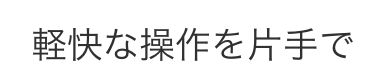

使い慣れているアプリケーション。そこに新しいアプリケーションが加わると操作に戸惑うこともあります。
TesSoMeは違和感を感じさせない見た目と、見慣れたアイコンで軽快な操作を提供します。
ユーザーの情報が知りたくなったらユーザーアイコンを軽くタップする。直感の通りに動いてくれます。
リプライが送りたいときは発言を親指で左へスワイプすれば、素早く返信することができます。
とっさに写真を投稿したくなった時も、見慣れたアイコンから素早く起動するカメラでその瞬間の投稿を確実にします。